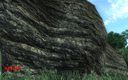
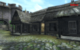
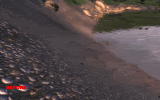
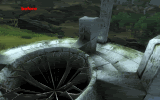
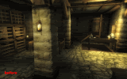

Last Updated 03/23/2009 and 1/10/2026
SUN GLARE
The tiny little mod Beaming Sunglare deserves special mention here. It only replaces a few small textures, but it makes a surprising difference in the way the sun looks in-game. Check it out!
For a less dramatic effect, try Subtle Sunshine.
DISTANT LANDSCAPE TEXTURES (LOD)
One of the most difficult questions to answer when looking at texture replacers is which distant landscape texture pack to use -- and it's still a surprisingly relevant issue. This guide is now updated with the most recent comparisons to help you make a more informed decision. Even if you already feel comfortable with your current choice, you may want to look at the comparisons here because some of the results are surprising.
The LandscapeLOD guide is now organized into separate pages related to different texture packs and versions of Oblivion. Each of the pages focuses on a slightly different mixture of replacement options.
LandscapeLOD 1.2 (Updated 9/21/2007)
The most recent information, including noise filter comparisons, reduced texture options, and normal map options for Oblivion 1.2.
Note: Original links to dev_akm's LOD comparison pages are no longer available.
LandscapeLOD 1.1
The 2nd-generation solutions. Less current than 1.2, but still a lot of good information on performance-based selection for QTP3, including comparisons to 1st-generation replacers.
LandscapeLOD 1.0
Where it all started. Selection for vanilla and QTP2, focusing on 1st-generation replacers.
WORLD TEXTURE PACKS
Here are descriptions of the major world texture packs released so far.
Note that in several cases, these texture replacers are described as "conflicting" with each other. This doesn't necessarily mean "broken" -- in most cases it just means that some textures will be overridden by whatever texture pack you install last. However, if you are using one texture replacer that includes some altered meshes (such as the parallax portions of QTP3 or QTP2: Parallax Qarl), then a conflict can cause a mismatch between the mesh and texture when you use more than one replacer. For example, if you first install a pack that replaces the texture and mesh to produce a parallax effect and then install a conflicting pack that only replaces the texture, then you can get very strange results, such as "swirling" areas or blurry edges. In these cases you'll have to remove the parallax mesh to fix the problem.
The most recently updated sections are listed first.
BOMRET'S TEXTURE PACK: SHIVERING ISLES
After finishing work on his Redimized version of QTP3 (see QTP3 section), Bomret decided to tackle the Shivering Isles expansion. BTP:SI is the dramatic result. It delivers astounding hi-res textures for SI, including New Sheoth (Crucible, Bliss, palace, Arden Sul, etc.), landscapes, statues, ruins, rootcaves, rocks, obelisks, and clutter (stuff like rugs, tombstones, etc.). If you have the SI expansion and the video hardware to handle it, then this is a must-have texture replacer.
Screenshots: | 01 | 02 | 03 | 04 | 05 | 06 | 07 | 08 | 09 | 10 | 11 | 12 | 13 | 14 | 15 | 16 | 17 | 18 | 19 | Many more |
Downloads: Links no longer available - mod was hosted on defunct sites (ElricM, FileFront, ei-der-zeit)
QARL'S TEXTURE PACK 3 (QTP3)
New QTP3 Redimized! Scroll down for more info!
Weighing in at an astounding 2.74Gb uncompressed (1.67Gb compressed download) and containing almost 4,000 files, Qarl's Texture Pack III (QTP3) dramatically improves the look of TES IV: Oblivion by creating new textures, normal maps, specular maps, and parallax maps to replace a large number of those in the game with ones that are higher resolution and more photorealistic, while at the same time still very close to the original feel of Bethesda's intentions. Replacement meshes are also included to use parallax mapping.
QTP3 is a huge improvement over QTP2, but the system requirements are also greater. Due to the increased number of high-resolution textures, machines with lower-end (256Mb) graphics cards may see a severe slow-down with this mod. 128Mb cards absolutely cannot handle it. A card with more than 512Mb would be ideal, but these are still quite expensive. Since the initial release, Qarl has dropped his plans to make a reduced version for 256Mb cards, but several other reduction packs are in progress or already released (see below for more details on this).
Screenshots
|  |  |
 |
|  |  |  |
|  |  |
Features
- Most textures are 4 times the size of the originals. Some, even more. This makes things seem much clearer and sharper in-game.
- A large number of meshes have been altered to take advantage of the game engine's parallax shader.
- Only parts of the mesh which NEED parallaxing have the parallax flag enabled. This removes unwanted artifacts parallaxing can cause around corners.
- Textures which use the parallax shader have been altered at the mipmap level so that things look very 3D from a distance but do not get the soupy artifacts associated with the parallax effect when viewed close-up.
- Advanced normal map techniques used to make landscape textures seem very 3D.
- Landscape color maps and normal maps edited at the mipmap level to reduce the tiling effect in the distance.
- Mesh fixes from the Unofficial Oblivion Patch are included. Note: Please check the TOTO FAQ for QTP3 for the latest patch details about UOP compatibility.
Things retextured: Architecture, Landscape, Rocks, Dungeons, Blood splatters, falling snowflakes, butterflies, Furniture, and other medium-sized clutter.
Things NOT retextured: Clothes, armor, weapons, creatures, NPCs, Foliage, the sky, Kvatch, the Arena, and the Oblivion realm.
Downloads: | Nexus Mods | Download links for ElricM no longer available |
Related Links: | Readme | TOTO FAQ for QTP3 (Updated 10/10/2007) |
QTP3: Redimized
What, yet another QTP3 reduction pack? Well, this one is different from the others. Bomret has done an amazing job of preserving the unique, high-resolution, details of Qarl's textures. (Note: since I helped out on this project, I may be somewhat biased in its favor, but probably not unreasonably so).
The name "Redimized" means Reduced and Optimized together -- which explains the intent of this release pretty well. Almost every QTP3 texture has been tweaked by hand (no scripts) using a very complicated and time-consuming process to achieve the best possible results. Special attention was given to the normal maps -- regenerating them, editing them, and deciding whether they should be reduced or not. All of Qarl's unique features, such as tweaked mipmaps, etc., are preserved as much as possible.
As a result, QTP3 Redimized runs much smoother than the original QTP3 with only a very minimal loss in visual quality.
For best results, users who have a 256Mb video card should also have at least 2Gb of RAM. The game will still stutter in some places, but you can minimize this by using Streamline or a similar mod to reduce the burden on your system. Users who have a 512Mb video card should have no performance problems using this mod. If you still encounter problems, then you probably have some other VRAM-intensive mods running, such as AEVWD. In cases like this, you may want to add Bob Markinson's QarlTP3 Reduced (see below) after installing this mod.
You don't need the original QTP3 package to use QTP3 Redimized -- it already includes all the textures and meshes (even the fixed meshes from the latest UOP-Compatibility Patch are already included).
Screenshots: | 01 | 02 | 03 | 04 | 06 | 07 | 08 | 09 | 10 | many more |
Downloads: Links no longer available - mod was hosted on defunct sites (ElricM, PlanetElderScrolls, ei-der-zeit, Rapidshare)
Qarl's Texture Pack 3 Reduced
Bob Markinson has created a reduced version of QTP3 that significantly reduces the stuttering/low fps problems often encountered when using Qarl's original. It manages to keep the texture detail as high as possible. It has been optimized for 256Mb video cards. Notable features include:
- Only modifies/reduces the closest textures - the 2nd and higher mipmaps are left untouched.
- Keeps all of Qarl's hand tweaked landscape mipmap texture optimizations intact.
- Keeps Qarl's parallax optimizations - No visible parallax artifacts on textures viewed close up.
- Keeps most normal maps untouched (especially in the Lite version) to maintain the detailed 3D look of QTP3.
QTP3R is nicely organized into modular sets which give more reductions as you add them. Start with the first one and keep adding until you get your VRAM usage under control!
Downloads: | Nexus Mods |
Further Reductions for QTP3
Other options if you have trouble running QTP3 and the tips in the FAQ just don't help enough include removing some of the textures, switching back to QTP2, or trying Reduced Normal Maps for QTP3 by Nikojiro. You will lose a significant amount of quality by doing this, but it's probably still a lot better than reverting to vanilla textures. Nikojiro basically used the same approach as QNMR1 did for QTP2.
MIKAL33'S TEXTURES
Mikal33 has released several amazing retexture packs for a variety of world objects, including trees, doors, flora, fruit/meat/vegetables, and other miscellaneous objects. These packs are a must-have for flora-lovers: Improved Doors & Flora (IDF), Improved Trees & Flora 1 (ITF1), and Improved Trees & Flora 2 (ITF2). ITF2 also includes a new canopyshadow texture to make the forest darker and more realistic. However, be warned that ITF1 and ITF2 can give a performance hit to video cards in heavily wooded areas, especially when used along with other large texture replacers.
To get the most out of these three mods, you should install them all in the order listed here (IDF first, then ITF1, then ITF2), since the later packs improve on a few textures from the earlier packs.
Mikal33 has also released a wonderful Improved Signs pack, and an excellent Improved Fruits, Vegetables, and Meats pack.
All of the above mods are compatible with both QTP3 and QTP2.
Mikal33 has also released excellent texture packs for the towns of Bruma, Bravil, Chorrol, and Skingrad. These conflict with QTP2 and QTP3.
Screenshots
|
Doors & Flora |
Trees & Flora 1 before | after before | after before | after before | after before | after before | after |
Trees & Flora 1 continued:
before | after
before | after
before | after
Trees & Flora 2
before | after
before | after
before | after
before&after
before | after
before | after
before | after
before | after
Bruma
before | after
before | after
before | after
before | after
before | after
before | after
before | after
Downloads
Improved Doors & Flora: | Nexus Mods | PlanetElderScrolls (defunct) | ElderScrolls FileFront (defunct) |
Improved Trees & Flora 1: | Nexus Mods |
Improved Trees & Flora 2: | Nexus Mods |
Improved Signs: | Nexus Mods |
Improved Fruits, Vegetables, and Meats:: | Nexus Mods |
Improved Bruma: | Nexus Mods | PlanetElderScrolls (defunct) |
Improved Chorrol: | Nexus Mods | PlanetElderScrolls (defunct) |
You can find a complete listing of Mikal33's textures on Nexus Mods.
BOMRET'S DETAILED NORMAL MAPS FOR VANILLA
If you like the vanilla Oblivion textures or just don't have the power to run one of the high-res replacers listed here, then Bomret's mod may be the answer. He has added more detail to the standard Oblivion normal maps without increasing the size of the files. The difference is not as dramatic as you'd get with a larger texture pack like Qarl's, but neither is the performance impact. In fact, since Bomret's files are the same size as the vanilla normal maps, you shouldn't see any performance hit at all with this mod. It works well with other vanilla texture packs like the original Parallax Cities Gigapack (by RulZ), but will conflict with mods like QTP3 and QTP2.
Screenshots: | wilderness before | wilderness after | wilderness before | wilderness after | Choroll exterior before | Choroll exterior after | Choroll exterior before | Choroll exterior after | Bruma interior before | Bruma interior after | Bruma exterior before | Bruma exterior after | Anvil exterior before | Anvil exterior after |
Version 1.1 Download (258Mb): | PlanetElderScrolls (defunct) |
Bomret has also released a set of alternate higher-res landscape textures to help reduce typical compression artifacts. These are larger textures, so they may impact performance on low-end systems.
Alternative HiRes Landscapes 2.0HR (87Mb): | PlanetElderScrolls (defunct) |
QARL'S TEXTURE PACK 2 (QTP2)
Qarl's Texture Pack 2 will most likely remain the preferred texture replacer for most users with 256Mb video cards until a reduced version of QTP3 is released. QTP2 replaces all normal landscape and rock textures, most architecture textures (castles, houses, and forts), and a lot of clutter textures (boxes and barrels). QTP2 replaces QTP1 (which was mostly just landscape & rocks), so you don't need to install QTP1.
For detailed comparisons, installation guidelines, and system tuning tips, see the QTP2 World Textures page (original links no longer available).
KOLDORN'S TEXTURES
Koldorn has released a great selection of texture packs aimed at improving specific areas in the game -- including caves, Ayleid ruins, sewers, lava, and even the Aurorans from Knights of the Nine. Koldorn's texture packs are compatible with QTP2 but will conflict with QTP3. Here's the list of his world textures with links:
- Koldorn's Caves 1
- Koldorn's Caves 2
- Koldorn's Ayleid Ruins
- Koldorn's Sewers 1 (for low-end to mid-range cards)
- Koldorn's Sewers 2 (for mid-range to high-end cards)
- Koldorn's Improved Lava
- Koldorn's Improved Lava 2 (variant)
You can find a complete list of his textures on Nexus Mods.
HTF'S DIVERSE GRASS
This mod isn't a pure texture replacer, but it's listed here because it dramatically improves the variety of grasses in the game and includes a set of landscape textures and LOD textures to match the new grasses. See the Other Improvements page for more details. No word yet on how well it works with QTP2 or QTP3.
CLEITANIOUS' REGAL/DARKER TEXTURES
Cleitanious (aka Marine Okeefe/Modder 300/ByblosHex) has released several excellent texture sets, including Regal Imperial City, Darker Imperial City, and Darker Cyrodiil. The Regal Imperial City seeks to make the Imperial City more like the original lore descriptions for the city: exceedingly rich and wealthy, gold all over, deep reds and purples, white marble, etc. The "Darker" sets, as you might guess, make Cyrodiil a darker and more atmospheric place. Darker Imperial City focuses on the Imperial City, providing a stark alternative to the "regal" version. Darker Cyrodiil replaces all of the game's landscape and plant textures with less colorful, darker textures.
Cleitanious' most recent release is Darker Regal Imperial City 2, which is based on Qarl's QTP3 textures instead of the original IC textures and is now a mix between Darker IC and Regal IC. If you use this with QTP3, you must install it after installing QTP3.
Darker Regal Imperial City 2 screenshots: | City Gate | Green Emperor Way | Market District West | Mausoleum | Talos District | Wall Detail |
Darker Cyrodiil screenshots: | Screen 01 | Screen 02 | Screen 03 | Screen 04 | Screen 05 |
Darker Regal Imperial City 2 download: | Nexus Mods |
Regal Imperial City download: | Nexus Mods |
Darker Imperial City download: | Nexus Mods |
JARROD'S OBLIVION TEXTURES
Jarrod created the first major texture replacer for Oblivion, and it's still popular today. Jarrod's textures are not as large as Qarl's, so they work better on slower systems. In the past, many users added Jarrod's textures over Qarl's textures if they had performance problems running one of Qarl's texture packs. Also, back in the QTP1-era, Jarrod's package replaced some things that Qarl did not (this is not true with QTP2 or QTP3). Unfortunately, not much has been done to extend and enhance Jarrod's textures since they were initially released. You can see screenshots here.
DOWNLOAD MIRROR SITES
Oblivion Files (elderscrolls.filefront) - Note: Most FileFront links are now defunct
Nexus Mods (was TESNexus/TESSource):
- Skingrad Roof Textures
- Better Tiling Textures
- Shaja 2048 Border Regions LOD
- Blade9722 2048 LOD (improved version of Shaja/CaptnKill approach)
- Blade9722 2048 Border Regions LOD (improved version of Shaja/CaptnKill approach)
- Bluesteel's LandscapeLOD NormalMap Fix MipMap Fix v.1.1 (by Soor)
Note: Googlepages, ElricM, Planet Elder Scrolls, Megaupload, and PseudoWorld.co.uk links are all defunct as of 2025.
MORE GOOD STUFF
These texture replacement mods may not make a dramatic difference compared to the choices already listed, but they are worth considering.
- Improved Lava
- Real Lava
- Buhay LOD variants: 1 | 2 | 3 |
- Grape Vats
- Night Sky Fire & Ice
- Lennybook's Weathered Direction Signs
Note: Zacharot's Max Res LODs and Far & Away enhanced 3D Distant Lands links from PlanetElderScrolls are defunct.